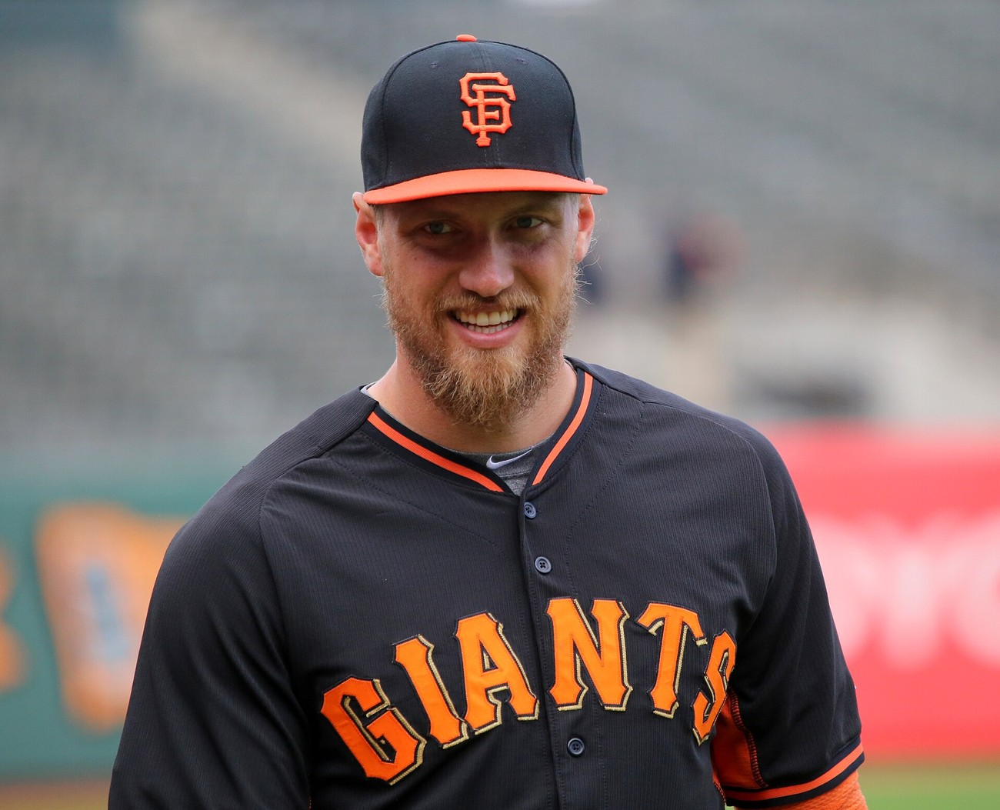
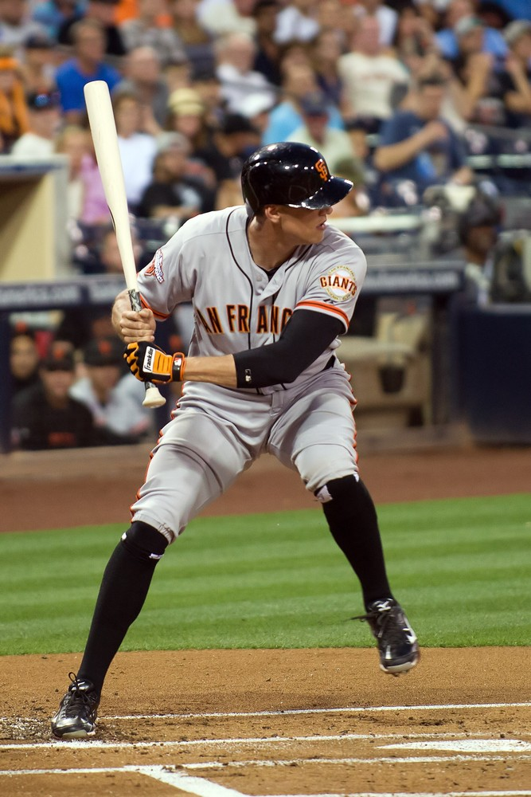
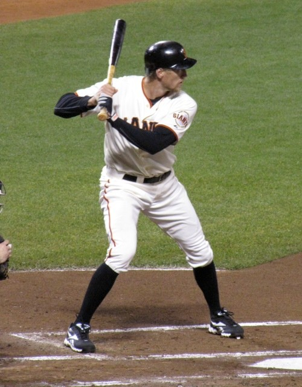
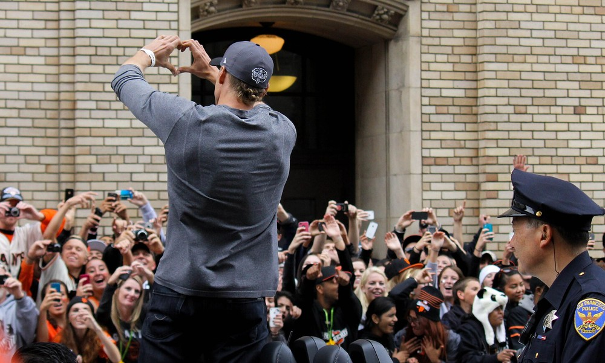

Hunter “The Reverend” Pence
The gangly right fielder who preached the Giants back from the dead in Cincinnati and hit .444 in the 2014 World Series.
The Hunter Pence Story
Nobody ever looked less like a ballplayer and played harder than Hunter Pence. The socks pulled up to the knees, the swing that seemed to use every limb at once, the throws that came out of nowhere, the eyes that went wide when he got going. He wasn't smooth. He was relentless, and for two Octobers he was the heartbeat of the whole clubhouse.
He was born April 13, 1983, in Fort Worth, Texas, and went to Arlington High, where he played the outfield and then shortstop as a senior. The Brewers took him in the 40th round in 2002 and he didn't sign. He spent a year at Texarkana College, then moved to UT Arlington, where he hit .395 in 2004 to lead the Southland Conference and win its Player of the Year award. Houston picked him in the second round that June.
He was in the big leagues by April 28, 2007, and his first homer was a grand slam against the Cardinals a week later. He hit .322 as a rookie and led NL rookies with nine triples. In Houston he became a two time All Star, in 2009 and 2011, and hit 25 homers in three straight seasons. The Astros traded him to the Phillies in July 2011, and he hit .314 for the year, fourth in the league.
On July 31, 2012, the Phillies sent him to us for Nate Schierholtz, Tommy Joseph and Seth Rosin. He didn't exactly tear it up that August, hitting .219 for the Giants the rest of the way, but that's not why we remember 2012. We remember the dugout in Cincinnati.
Down two games to none in the NLDS, one loss from going home, the Giants gathered before Game 3 and Pence gave them a speech that nobody who heard it has forgotten. They won that night in ten innings, with Pence legging out a single on a cramping calf. They won the next two in Cincinnati. They fell behind the Cardinals three games to one in the NLCS and won three straight again, six elimination games in a row, and Pence was in the middle of the dugout huddle firing everybody up before every one. They called him the Reverend. Then they swept Detroit.
In 2013 he started all 162 games, the first Giant to do it since Alvin Dark in 1954, hit 27 homers with 99 RBIs and stole 22 bases. He was the first Giant to go 20 and 20 since Barry Bonds in 1998, the NL Player of the Month for September, and he won the Willie Mac Award. In July his diving catch in San Diego saved Tim Lincecum's no hitter. In September he hit a grand slam and drove in seven at Dodger Stadium in a 19 to 3 win. At the end of September the Giants gave him five years and $90 million, and during the physical they found out he had Scheuermann's disease, a spinal condition he'd been playing through for who knows how long.
His streak of consecutive starts reached 331 near the end of 2014, and he kept the games played streak alive with a pinch hit appearance. He made his third All Star team. Then came another October: the leaping catch against the wall on Jayson Werth in the NLDS clincher, a homer off James Shields in Game 1 of the World Series, and a .444 average with 12 hits in the seven games against Kansas City. He had a hit in every game of that Series.
The body started to give out after that. A pitch broke his left forearm in spring training in 2015 and ended his iron man streak at 383 games. Wrist tendinitis and an oblique strain wiped out most of the rest of that season. He tore a hamstring tendon in June 2016 and still hit .289, and he hit his 200th career homer that May. By 2018 he was hitting .226, and on the last day of that season the Giants honored him at the ballpark like they knew it was goodbye.
It wasn't, quite. He signed a minor league deal with Texas in 2019, got voted in as the American League's starting DH in the All Star Game, hit .297 with 18 homers and won the AL Comeback Player of the Year. The Giants brought him home for 2020, but he hit .096 in 17 games and was released in August. He retired on September 26, 2020, and spent the next day, the last day of the season, on a boat in McCovey Cove with his wife Alexis.
He's still around. He went into the Giants Wall of Fame in 2022, he's done color commentary for NBC Sports Bay Area and analysis for MLB Network, and he lives in San Francisco. For a guy who played only parts of seven seasons here, he feels as Giant as anybody.
What He Meant to Us
Hunter Pence is the most lovable Giant of my adult life and I won't hear arguments. He looked like he assembled himself out of spare parts every morning and somehow it all worked. When he came over from Philly in 2012 I didn't think much of it. By October I'd have run through a wall for him, which is fair, since he did it for us more than once.
The Cincinnati speech is the stuff of legend because we never really heard it. Nobody can quite agree on the words. Everybody agrees on what happened next. Six straight elimination games, six wins, and a parade. I don't care what anybody says about chemistry being overrated. That team had it, and he was the reason.
Then 2014 he hits .444 in the World Series and nobody talks about it because Bumgarner was busy being a myth. Twelve hits in seven games. A hit in every one. The sliding catch in Game 4, the double down the line, all those wide eyed stares into the dugout. If MadBum hadn't done what he did, Pence was your Series MVP.
And the yes yes yes chant before the 2014 playoffs. A grown man leading a ballpark full of people in a chant like a cheerleader at a high school pep rally. Only him. Only here.
In Pictures



Why He Was Clutch
Pence's biggest clutch moment didn't happen in the batter's box. It happened in a dugout in Cincinnati before Game 3 of the 2012 NLDS, when the Giants were one loss from elimination and he basically willed them into believing. Matt Cain, who pitched the opener and the clincher of every series that October, said Pence challenged everybody to dig deeper than they ever had. The Giants then won six straight elimination games on the way to a title.
He backed it up with the bat and the glove. In Game 7 of the 2012 NLCS his bat shattered and still sent a ball through the middle with the bases loaded, three runs scored and the Cardinals were done. In the 2014 NLDS clincher he went up the right field wall to take extra bases from Jayson Werth with a one run lead. In the 2014 World Series he hit .444, scored seven runs, drove in five and hit safely in all seven games.
Some players get tight in October. Pence got louder. We needed somebody to be the emotional engine of those teams, and it was the guy with the knee high socks.
Clutch Moments
- October 9, 2012
The speech, and a single on one good leg
Down 2 and 0 in the NLDS and facing elimination at Great American Ball Park, the Giants huddled before Game 3 and Pence gave the speech. Jeremy Affeldt said he was lively, pacing, getting loud. Matt Cain said he challenged everybody in the room to dig deeper than they had before.
Then he went out and played through it. With his calf cramping so badly the trainer came out in the middle of his tenth inning at bat, he stayed in and legged out a single, and the Giants scored the go ahead run on a Scott Rolen error to win 2 to 1. They didn't lose again in that series.
- October 22, 2012
The double that hit the ball twice
Game 7 of the NLCS at AT&T Park, Giants up 2 to 0 in the third with the bases loaded against Joe Kelly. Pence swung at the first pitch, his bat shattered and caught the ball twice, and the ball spun past a confused Pete Kozma into center field. Jon Jay booted it, three runs scored, and the rout was on. The Giants won 9 to 0 and went to the World Series.
- July 13, 2013
Laying out for Timmy's no hitter
At Petco Park, with two outs in the eighth and Tim Lincecum working on his first no hitter, Alexi Amarista hit one in front of Pence in right. He dove and caught it. He also drove in five runs that night in a 9 to 0 win, and Lincecum finished the no hitter an inning later.
- September 14, 2013
Seven RBIs at Dodger Stadium
Pence hit his first grand slam as a Giant off Stephen Fife, over the center field wall, and drove in a career high seven runs in a 19 to 3 beating of the Dodgers, the most runs anybody had ever scored in a game at Dodger Stadium. That week he hit .448 with six homers and 19 RBIs.
- October 7, 2014
Up the wall on Werth
Game 4 of the NLDS at AT&T Park, Giants leading Washington 2 to 1 in the sixth. Jayson Werth drove one to deep right and Pence leaped against the wall to catch it. The Giants won 3 to 2 to close out the series.
- October 21, 2014
First inning homer in Kansas City
Game 1 of the World Series at Kauffman Stadium. The Giants were already up 1 to 0 when Pence lined a two run homer to center off James Shields in the first inning. He scored again in the fourth, and Madison Bumgarner took it from there in a 7 to 1 win.
- October 25, 2014
Three hits, three RBIs, one sliding catch
Game 4 of the World Series, Giants down 4 to 1 at home and down two games to one in the Series. Pence beat out a double play ball to drive in a run in the first, singled in a run in the fifth and scored the tying run, scored again in the sixth, and doubled in a run in the seventh. He finished 3 for 5 with three RBIs and two runs, then made a sliding catch on a Lorenzo Cain bloop in the ninth. Giants 11, Royals 4.
The Highlights
What They Said About Pence
“Hunter was lively, he was pacing, he was getting loud, he was getting excited.”
“He challenged all of us in the clubhouse that night to dig deeper than we had before. He took things to a different level of intensity physically and mentally and that rubbed off on all of us.”
“Hunter was the super motivator on the team and had the ability to back it up.”
“Without Hunter Pence stepping in and earning the nickname ‘The Reverend’ that season, I don’t know that we have that 2012 ring on our fingers.”
“Hunter was the energy and the glass-half-full personality every team needs to balance out the ups and downs of the season.”
Career Stats
| Year | Team | G | AB | R | H | 2B | 3B | HR | RBI | SB | BB | AVG | OBP | SLG | OPS |
|---|---|---|---|---|---|---|---|---|---|---|---|---|---|---|---|
| 2007 | HOU | 108 | 456 | 57 | 147 | 30 | 9 | 17 | 69 | 11 | 26 | .322 | .360 | .539 | .899 |
| 2008 | HOU | 157 | 595 | 78 | 160 | 34 | 4 | 25 | 83 | 11 | 40 | .269 | .318 | .466 | .784 |
| 2009 | HOU | 159 | 585 | 76 | 165 | 26 | 5 | 25 | 72 | 14 | 58 | .282 | .346 | .472 | .818 |
| 2010 | HOU | 156 | 614 | 93 | 173 | 29 | 3 | 25 | 91 | 18 | 41 | .282 | .325 | .461 | .786 |
| 2011 | HOU | 100 | 399 | 49 | 123 | 26 | 3 | 11 | 62 | 7 | 30 | .308 | .356 | .471 | .827 |
| 2011 | PHI | 54 | 207 | 35 | 67 | 12 | 2 | 11 | 35 | 1 | 26 | .324 | .394 | .560 | .954 |
| 2012 | PHI | 101 | 398 | 59 | 108 | 15 | 2 | 17 | 59 | 4 | 37 | .271 | .336 | .447 | .783 |
| 2012 | SF | 59 | 219 | 28 | 48 | 11 | 2 | 7 | 45 | 1 | 19 | .219 | .287 | .384 | .671 |
| 2013 | SF | 162 | 629 | 91 | 178 | 35 | 5 | 27 | 99 | 22 | 52 | .283 | .339 | .483 | .822 |
| 2014 | SF | 162 | 650 | 106 | 180 | 29 | 10 | 20 | 74 | 13 | 52 | .277 | .332 | .445 | .777 |
| 2015 | SF | 52 | 207 | 30 | 57 | 13 | 1 | 9 | 40 | 4 | 16 | .275 | .327 | .478 | .805 |
| 2016 | SF | 106 | 395 | 58 | 114 | 23 | 1 | 13 | 57 | 1 | 43 | .289 | .357 | .451 | .808 |
| 2017 | SF | 134 | 493 | 55 | 128 | 13 | 5 | 13 | 67 | 2 | 40 | .260 | .315 | .385 | .700 |
| 2018 | SF | 97 | 235 | 19 | 53 | 11 | 1 | 4 | 24 | 5 | 11 | .226 | .258 | .332 | .590 |
| 2019 | TEX | 83 | 286 | 53 | 85 | 17 | 1 | 18 | 59 | 6 | 26 | .297 | .358 | .552 | .910 |
| 2020 | SF | 17 | 52 | 4 | 5 | 0 | 1 | 2 | 6 | 0 | 3 | .096 | .161 | .250 | .411 |
| Career | 1707 | 6420 | 891 | 1791 | 324 | 55 | 244 | 942 | 120 | 520 | .279 | .334 | .461 | .795 |
Houston 2007 to 2011, Philadelphia 2011 to 2012, Giants 2012 to 2018 and 2020, Texas 2019. Postseason lines built from his game logs. Scroll the table sideways on a phone.
Postseason
| Year | Team | Series | Opp | G | AB | R | H | 2B | 3B | HR | RBI | BB | AVG |
|---|---|---|---|---|---|---|---|---|---|---|---|---|---|
| 2011 | PHI | NLDS | STL | 5 | 19 | 3 | 4 | 0 | 0 | 0 | 4 | 2 | .211 |
| 2012 | SF | NLDS | CIN | 5 | 20 | 0 | 4 | 0 | 0 | 0 | 0 | 0 | .200 |
| 2012 | SF | NLCS | STL | 7 | 28 | 4 | 5 | 1 | 0 | 1 | 3 | 1 | .179 |
| 2012 | SF | WS | DET | 4 | 14 | 3 | 4 | 1 | 0 | 0 | 1 | 1 | .286 |
| 2014 | SF | WC | PIT | 1 | 4 | 2 | 1 | 0 | 0 | 0 | 0 | 1 | .250 |
| 2014 | SF | NLDS | WSH | 4 | 18 | 1 | 5 | 2 | 0 | 0 | 0 | 1 | .278 |
| 2014 | SF | NLCS | STL | 5 | 17 | 2 | 4 | 1 | 0 | 0 | 3 | 3 | .235 |
| 2014 | SF | WS | KC | 7 | 27 | 7 | 12 | 3 | 0 | 1 | 5 | 3 | .444 |
| 2016 | SF | WC | NYM | 1 | 4 | 0 | 0 | 0 | 0 | 0 | 0 | 0 | .000 |
| 2016 | SF | NLDS | CHC | 4 | 18 | 1 | 4 | 0 | 0 | 0 | 0 | 0 | .222 |
| Career | 43 | 169 | 23 | 43 | 8 | 0 | 2 | 16 | 12 | .254 |